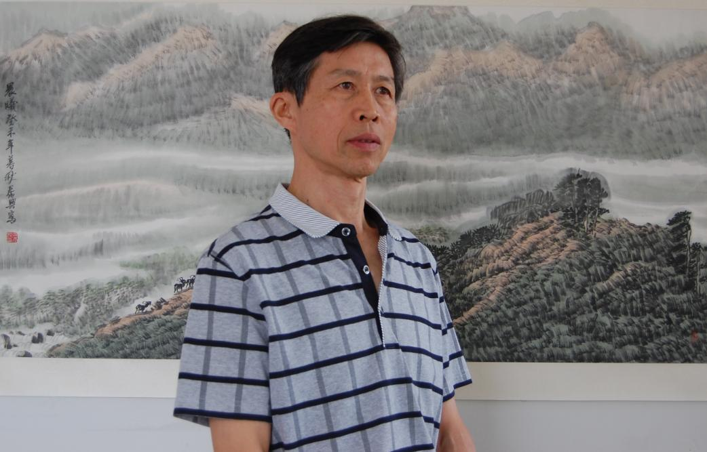
画家吕泰兴
问道林泉 留心山谷
六十岁对很多人来说是一个不老不少的年纪；但对一个国画家来说，却是为霞满天、橙黄橘绿的好时节，正所谓“人生六十才开始”。吕泰兴先生已过耳顺之年，经年翰墨积淀了技法，更沉淀了心性，对个人艺术创作有了更为明确的追求。既不需要标新立异或者追随流行，也可远离各种“命题作画”，用他的话说就是“已经可以随心画点自己想画的了”。
泰兴是一位体制内的职业画家。早年因工作需求，主攻人物画。运笔用墨除了发挥中国画的技法，也借鉴了一些西画的技巧，画作注重人物内在，以情求真，坦荡明快，质朴豪迈，极富感染力。代表作《石工》、《白首之心》、《延续》、《甲午国耻》等，将一个个、一群群当代劳动大众、革命英烈和历史人物形象，生动地展现在画卷上，陆续入选各类美展，多次奖获，有些则发表在各地报刊。
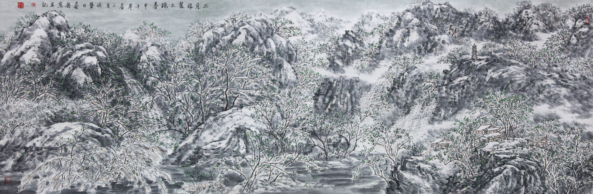
二月银装不掩春(2014) 206cmx68cm
“少无适俗韵，性本爱丘山”，少年成名的泰兴情有独钟的，还是“质有而趣灵”的山水画。性情使然，上世纪八十年代末，泰兴创作了被称为“黄土高坡” 的系列山水画，在当时的青年画家中一枝独秀。泰兴这一时期的山水画作，多用工笔。即使大幅的画作，也总是一丝不苟。放眼画中，无论远山近岭，林木阡陌，还是云雾溪水，茅舍炊烟，抑或村头的一盘石碾、一群鹅鸭，甚至枝头一朵含苞待放的蓓蕾，他都极尽刻画描摹。画面清澈而纯朴，深邃且淡远，凝重不失明朗，苍凉而充满生机……蔚为大观，美不胜收！
巨幅工笔山水《热土》在美国展出期间，有对中年华裔夫妇一周内三次观展，对着画作静静地观赏，间或小声交谈，久久驻足。
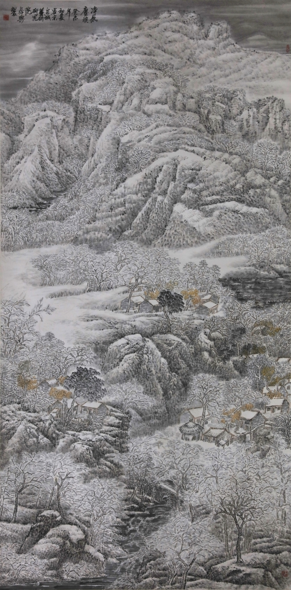
净无尘埃(2003) 248cmx124cm
然而，正当泰兴的工笔山水画创作风生水起，众人都认为他会乘势而上时，他却突然沉寂下来，回过头来全面审视自己，追问自己心中的山水到底为何物，又在何处？
带着思考，怀着梦想，学古代大家“观道”、“体道”，探山水之“原委”，摄山水之魂魄，泰兴先生背起行囊，独自向着远方的山川悄然出发了。数年间，他东拜崂山泰岳，西寻峨眉青城，南访黄山匡庐，北探白山黑水，足迹遍及长城内外、江河上下。近几年，他更是像一只不知疲倦的候鸟，每至冬季飞往天涯海角，游走于苗乡黎寨。脚行万里，胸有丘壑。那些游历过的名山大川，那些江边走过的羊肠小路，住过的村寨茅舍，无疑是画家最为珍贵的财富。
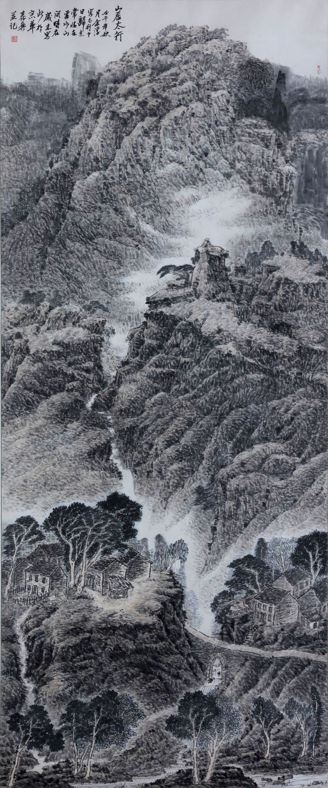
山居太行(2002) 280cmx120cm
山水画是“外师造化、中得心源”的艺术。正是有了多年来积累的大量山水写生，丰富的生活体验，和对山水画特质的深入思考，泰兴的山水画已经跨入了全新的境界。他相继推出的山水画让我们看到，画家的心灵之窗已经开启，蓄积已久的泉水奔涌而出，笔墨营造出来的是崭新的意境，是一个个大美的世界……或壮美雄浑，大气磅礴；或炽烈如火，诗意奔放；或灵动曼妙，宁静肃穆。物我相融，宛若天成，读来令人荡气回肠！
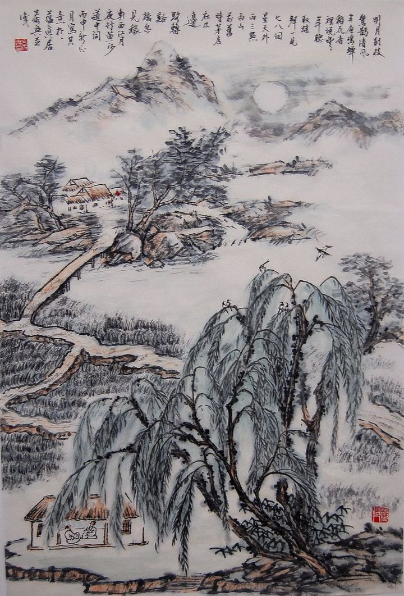
明月别枝惊鹊(2016) 68cmx46cm
笔者曾读过泰兴的《临水仙居图》，远景是弥漫着的云雾和遍野山花，近景是泊在水中的渔舟和掩映在花丛中的茅舍，特别是那一泓如梦如幻的水，禅一样的静谧，静的让人因崇敬而生畏、纵然内心有千般杂念，也必将被涤荡得洁洁净净……这是画家用熟练的笔墨技巧“无中生有”造出的人间仙境。在师古人与师造化之间，吕泰兴一直有着清醒的认识，较好的处理了二者的关系，所以，他的画既有古意又有现代气息。他对山水结构的处理，形成了自己非常结实的语境。技近于道，因之画和画技皆是道，因之人称画“非画也，真道也”。可谓他得山水之魂魄。
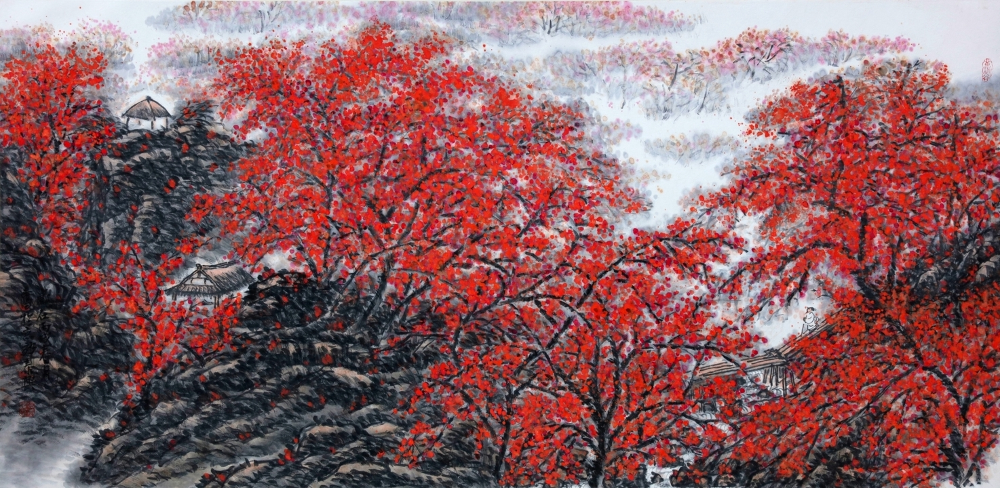
梦逰桃花溪(2006) 138cmx68cm
更有以《山居太行》为代表的追求厚重和苍茫感的大幅山水画系列，以《净无尘埃》为代表的雪域莽原山水画系列，以《金都》为代表的重彩山水画系列，
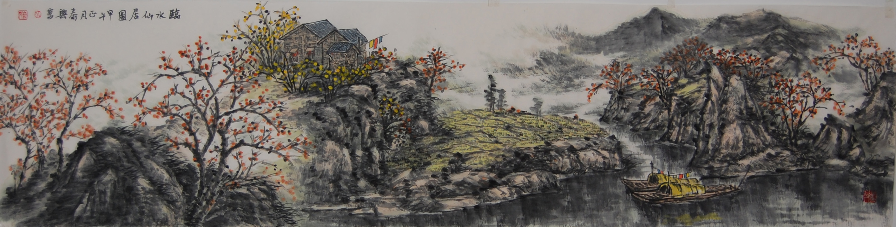
临水仙居图(2014) 138cmx34cm
以《海南纪游》为代表的水墨山水画系列，以《明月别枝惊鹊》为代表的古典词意画系列，以及《寄志丘壑》、《霞光》、《清都》等等，每一件作品都抒发着画家对人生、对自然的感悟，堪称大境界。
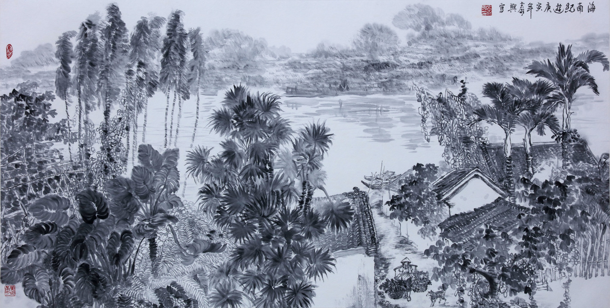
海南纪逰之二(2010) 138cmx68cm
论及国画，不能不说题画。泰兴的题画，字态正欹错落，散扑有致，魏隶兼容，古朴遒劲，灵动秀美，潇洒流畅，与画融会，相得益彰。这得益于他对书法艺术的挚爱和勤奋，临池不辍。他遍临《张迁碑》、《云峰石刻》等汉魏石刻，又学赵孟頫、于右任、吴昌硕之行草名帖，积淀了深厚的书法造诣。
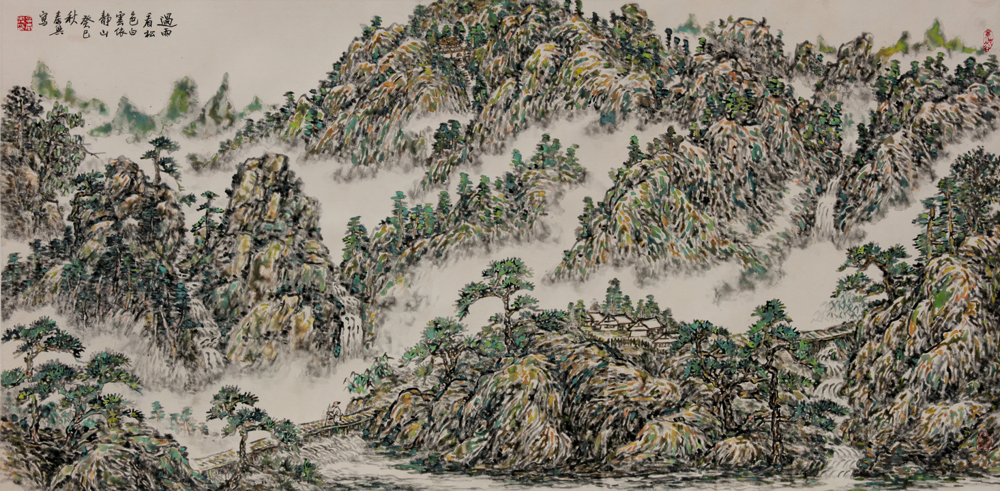
过雨看松色(2013) 140cmx70cm
纵览泰兴画作，兼容广大，人物山水，工笔写意，水墨泼彩皆为之。他生活简居而心平，拒绝急功近利，崇尚龚贤“读书养气未必非画苑家之急事也”。模山范水在他看来实则是与林泉交友，与山川对话，似身心处在真林泉之中，“卧游”在真山水之间。所谓“凡所游履，皆图之于室”，“抚琴动操，欲令众山皆响”，正如他喜欢常用的一枚“留心山谷”印所示。其题画词多有“写得云山为己居”、“志雅於高云，亦置丘壑”之语，再有借用黄慎句治印的印文“以写我心”等等，其旨趣可见一斑。
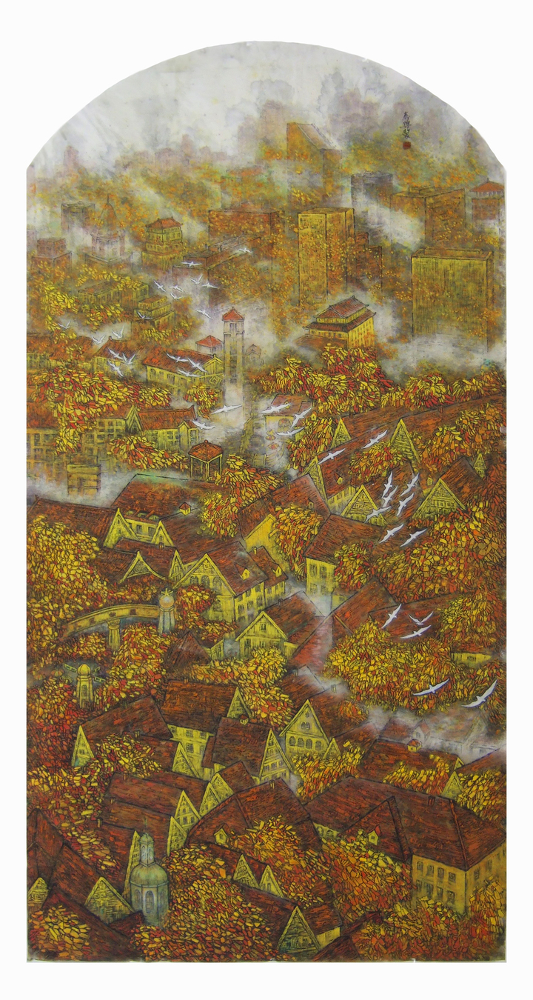
金都(2006) 248cmx124cm
大千先生有言：“其始学也,必先师古人,而后师万物,而后师造化,终之以师吾心为的焉……”中国画的最高形态，不在于简单地描摹山水，而在于创造出画家心中的山水,传达其思想感情,表现其志趣性情。泰兴正是如此，他师古人，师万物，师造化，而最终，一切都汇至心灵之泉，融入他的山水画之中。
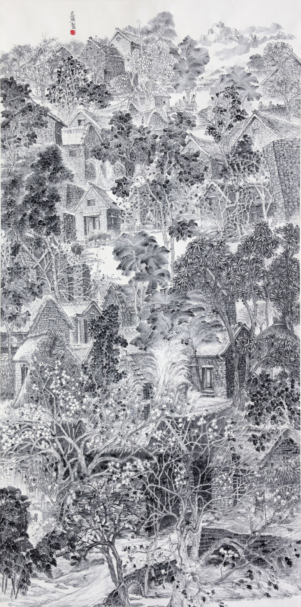
静域(2012) 248cmx124cm
走近泰兴先生的山水画，也就走近了泰兴的心灵世界。